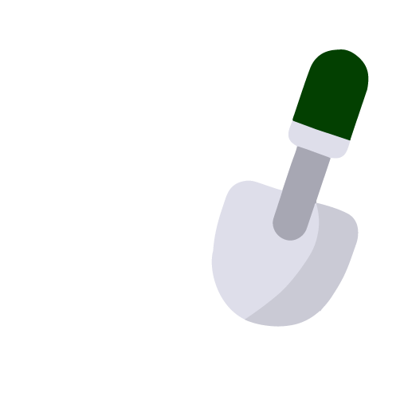
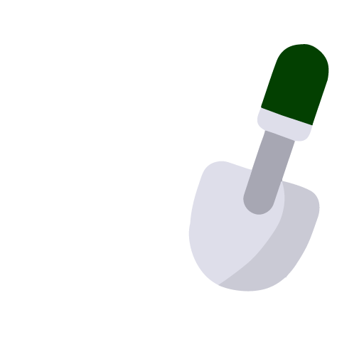

Herkunft
Woher kommt die Monstera?
Diese Pflanze stammt ursprünglich aus den tropischen Regenwäldern Zentral- und Südamerikas und ist für ihre kletternden Eigenschaften bekannt. Monstera kann an Stützen oder Rankgittern hochwachsen.
Somit kann die Pflanze einen echten Dschungelvibe in Ihr Zuhause bringen. Aber keine Sorge, sie kann auch gut als Busch gehalten werden und passt sich verschiedenen Wachstumsbedingungen an.
Pflege

 

Arten
Monstera Deliciosa
Die Monstera Deliciosa ist eine der bekanntesten und beliebtesten Arten der Monstera-Pflanzen. Sie ist für ihre großen, herzförmigen Blätter mit markanten Löchern und Schlitzen bekannt, die der Pflanze ihr charakteristisches Aussehen verleihen. Die Blätter können eine beeindruckende Größe von bis zu 90 Zentimetern erreichen.
Monstera Adansonii
Die Monstera Adansonii, auch bekannt als "Fensterblatt", ist eine charmante und attraktive Art der Monstera-Familie. Ihre Blätter sind kleiner als die der Monstera Deliciosa und haben ein unverwechselbares Muster aus perforierten Löchern und Schlitzen. Dieses Muster verleiht der Pflanze eine zarte und filigrane Erscheinung.
Monstera Obliqua
Die Monstera Obliqua, auch als "Schweizer Käsewein" bekannt, ist eine äußerst seltene und begehrte Art der Monstera-Pflanzen. Sie zeichnet sich durch ihre extrem großen, löchrigen Blätter aus, die sie zu einer wahren Augenweide machen. Die Blätter sind dünner als die anderer Monstera-Arten und können eine gewellte oder leicht gekräuselte Struktur aufweisen.
Disclaimer
Dies ist ein Projekt des Studiengangs Kommunikation, Wissen, Medien an der FH Hagenberg.
Die Website wurde umgesetzt von: Johanna Blaha, Madeleine Enser und Anna Lanz.